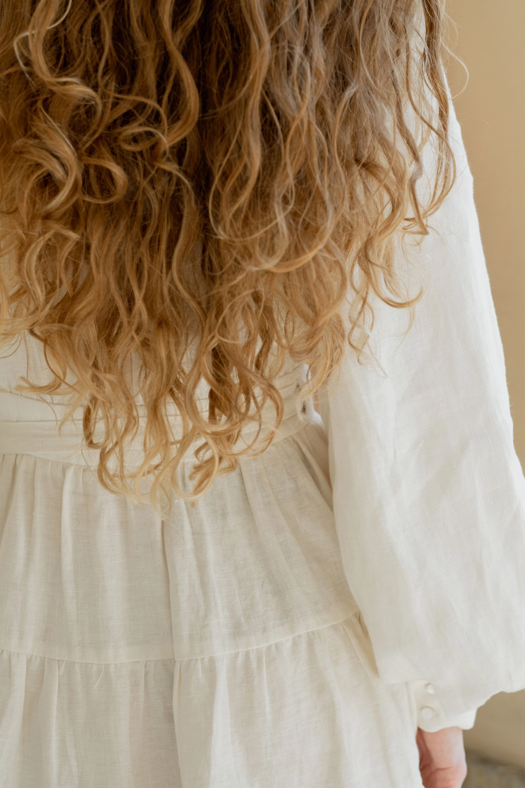

KSTUDIO
Пространство Красоты
Эксперты в индустрии окрашивания
Оттенки волос
Референсы для обсуждения с колористом. Здесь можно присмотреть оттенок и взять кадр за ориентир.


Услуги и запись

Где посмотреть услуги?
Откройте страницу услуг и записи в VK.
Что показать колористу?
Подготовьте фото своих волос при дневном свете и пример оттенка, который вам нравится.
Где связаться со студией?
Откройте сообщество KSTUDIO во ВКонтакте.
Студия KSTUDIO
Студия окрашивания волос в стиле лофт. На фото — пример такого интерьера.